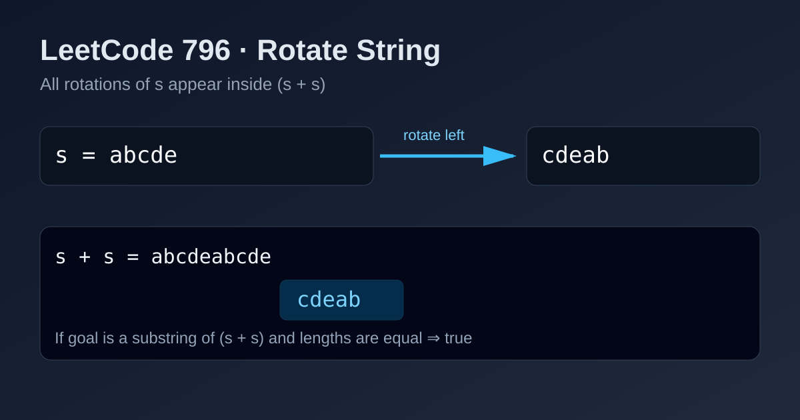

LeetCode 796: Rotate String (Double-String Containment Check)
LeetCode 796StringRotationSimulationToday we solve LeetCode 796 - Rotate String.
Source: https://leetcode.com/problems/rotate-string/

English
Problem Summary
Given two strings s and goal, return true if and only if s can become goal after repeatedly moving the leftmost character of s to the right end.
Key Insight
All rotations of s appear as contiguous substrings inside s + s. So if lengths are equal and goal is a substring of s + s, the answer is true.
Brute Force and Limitations
Generate each rotation one by one and compare with goal. It works, but repeated string building is more verbose and less elegant than the containment trick.
Optimal Algorithm Steps
1) If lengths differ, return false.
2) Build doubled = s + s.
3) Return whether doubled contains goal.
Complexity Analysis
Time: O(n) on average for substring search (language-library dependent).
Space: O(n) for s + s.
Common Pitfalls
- Forgetting to check equal lengths first.
- Handling empty strings incorrectly (empty and empty should return true).
- Re-implementing rotation loops when a direct containment check is enough.
Reference Implementations (Java / Go / C++ / Python / JavaScript)
class Solution {
public boolean rotateString(String s, String goal) {
if (s.length() != goal.length()) {
return false;
}
String doubled = s + s;
return doubled.contains(goal);
}
}import "strings"
func rotateString(s string, goal string) bool {
if len(s) != len(goal) {
return false
}
doubled := s + s
return strings.Contains(doubled, goal)
}#include <string>
using namespace std;
class Solution {
public:
bool rotateString(string s, string goal) {
if (s.size() != goal.size()) {
return false;
}
string doubled = s + s;
return doubled.find(goal) != string::npos;
}
};class Solution:
def rotateString(self, s: str, goal: str) -> bool:
if len(s) != len(goal):
return False
doubled = s + s
return goal in doubledvar rotateString = function(s, goal) {
if (s.length !== goal.length) {
return false;
}
const doubled = s + s;
return doubled.includes(goal);
};中文
题目概述
给定字符串 s 和 goal，每次可把 s 最左字符移到最右侧。判断经过若干次旋转后，s 能否变成 goal。
核心思路
s 的所有旋转结果都会出现在 s + s 这个双倍字符串中。因此只要长度相同且 goal 是 s + s 的子串，就能返回 true。
暴力解法与不足
可以逐次构造旋转字符串并比较，但实现更啰嗦，字符串拼接次数更多，不如“双倍字符串包含判定”直接。
最优算法步骤
1）先判断长度是否相同，不同直接返回 false。
2）构造 doubled = s + s。
3）判断 doubled 是否包含 goal。
复杂度分析
时间复杂度：平均 O(n)（取决于语言内置子串搜索实现）。
空间复杂度：O(n)（用于构造 s + s）。
常见陷阱
- 忘记先校验两串长度。
- 忽略空串场景（空串与空串应返回 true）。
- 过度手写旋转逻辑，增加错误面。
多语言参考实现（Java / Go / C++ / Python / JavaScript）
class Solution {
public boolean rotateString(String s, String goal) {
if (s.length() != goal.length()) {
return false;
}
String doubled = s + s;
return doubled.contains(goal);
}
}import "strings"
func rotateString(s string, goal string) bool {
if len(s) != len(goal) {
return false
}
doubled := s + s
return strings.Contains(doubled, goal)
}#include <string>
using namespace std;
class Solution {
public:
bool rotateString(string s, string goal) {
if (s.size() != goal.size()) {
return false;
}
string doubled = s + s;
return doubled.find(goal) != string::npos;
}
};class Solution:
def rotateString(self, s: str, goal: str) -> bool:
if len(s) != len(goal):
return False
doubled = s + s
return goal in doubledvar rotateString = function(s, goal) {
if (s.length !== goal.length) {
return false;
}
const doubled = s + s;
return doubled.includes(goal);
};
Comments